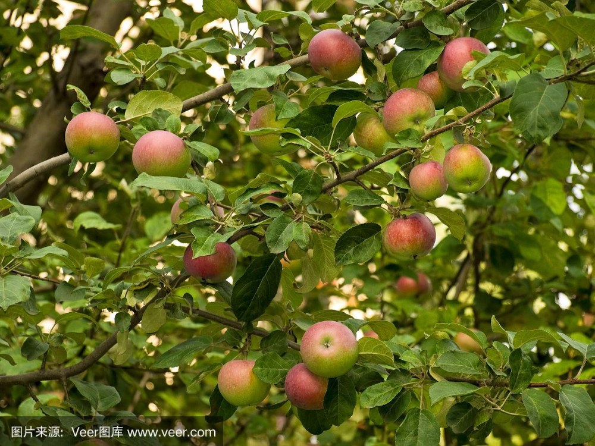
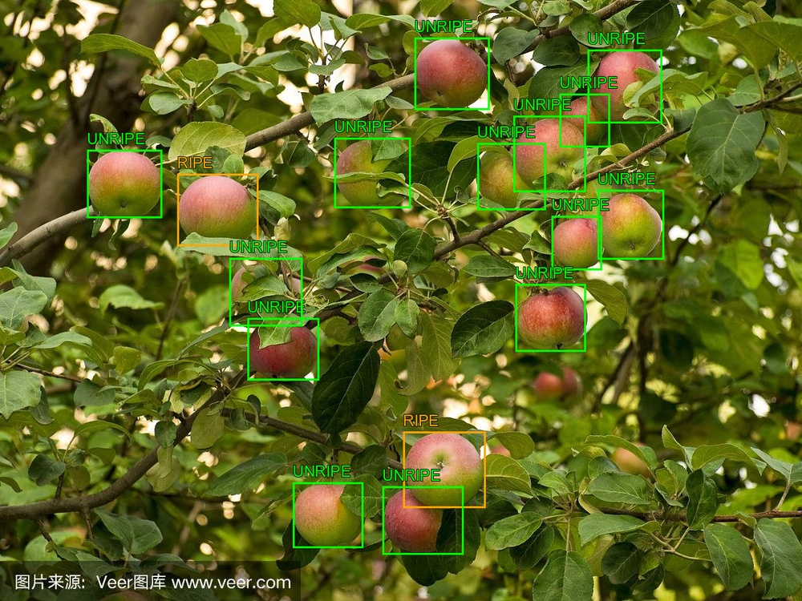

05 / TESTING & EVALUATION
测试与评估
验证数据、标注结果与识别效果，形成可复核的评估结果
TESTING & EVALUATION PROJECTS
测试评估项目
PROJECT 01 / APPLE CLASSIFICATION EVALUATION苹果分类测试与评估已有测试结果 / 待扩展在线实验
测试结果+ 查看测试结果− 收起
测试原图

预测画框结果图

画框颜色：成熟为橙色，未熟为绿色，烂坏为红色；框内结果是预测，不是真值。
预测分布
预测明细+ 查看记录− 收起
按原 CSV 顺序展示前 5 条，共 16 条；数值保持原记录。
| 记录 | 预测类别 | 亮度 | R/G 比例 |
|---|---|---|---|
| 1 | 未熟 | 103.7876 | 1.2284 |
| 2 | 成熟 | 122.6177 | 1.186 |
| 3 | 未熟 | 83.3986 | 0.9333 |
| 4 | 未熟 | 97.382 | 1.4217 |
| 5 | 未熟 | 105.3672 | 1.2757 |
评估说明+ 查看评估说明− 收起
- 当前实验采用颜色与亮度等特征进行规则分类。
- 分类对象来自已经框选好的苹果区域。
- 测试数据没有人工真值标签，因此不能计算独立测试准确率。
- 本实验验证：标注数据 → 特征提取 → 规则分类 → 测试结果。
- 当前实验不是神经网络模型训练。
来源：已有苹果测试展示资产及预测报告（20260922_134210）；本页仅静态展示，不运行预测程序。
PROJECT 02 / TRAFFIC OBJECT DETECTION EVALUATION交通目标检测与评估本地检测实验 / 已验证
使用成熟预训练 YOLO 模型对交通场景图片进行目标检测，验证人、车辆、自行车、交通灯等目标的识别效果。
本地实验服务运行后可上传单张交通场景图片，查看带框检测结果与类别统计。
交通检测入口连接本机实验服务，需在本机服务运行时使用。